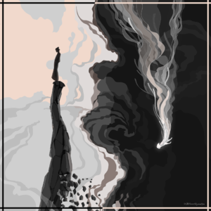
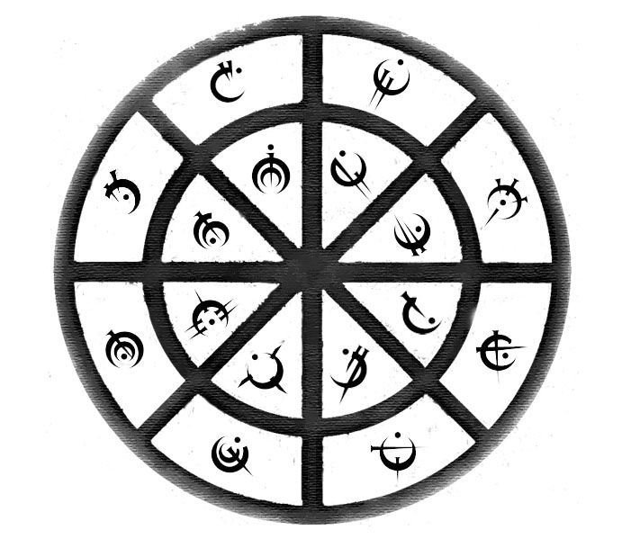
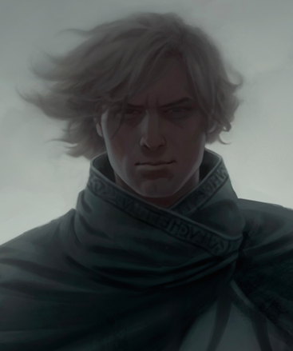
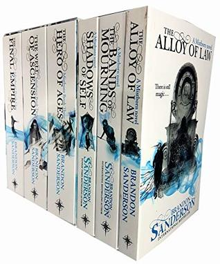

artist: Heatherly
The Mistborn Series takes place on a planet in the Cosmere universe called Scadrial
which is very similar to our Earth in terms of lifeforms and geology. In the Cosmere, most Shards
(of Adonalsium) reside in a planet, where they use them for their intents. This planet, Scadrial,
has two contrasting Shards residing in it, Preservation and Ruin, but both are now intertminged to Harmony.
This page elaborates on such.

Metals in Scadrial are used to channel in Investiture from Preservation. This is the foundation for a lot
of events in the book as the reader gets hooked on finding how an allomancer or feruchemist will solve a specific problem.
However, there is much more than that in context to the Cosmere's rules.

This lists all the characters in Mistborn eras 1 and 2, both main and supporting.

The books included in the Mistborn Series, their synopsis, and links to their purchase.

About the Book
For a thousand years the ash fell and no flowers bloomed. For a thousand years the Skaa slaved in misery and lived in fear. For a thousand years the Lord Ruler, the "Sliver of Infinity," reigned with absolute power and ultimate terror, divinely invincible. Then, when hope was so long lost that not even its memory remained, a terribly scarred, heart-broken half-Skaa rediscovered it in the depths of the Lord Ruler's most hellish prison. Kelsier "snapped" and found in himself the powers of a Mistborn. A brilliant thief and natural leader, he turned his talents to the ultimate caper, with the Lord Ruler himself as the mark.
Kelsier recruited the underworld's elite, the smartest and most trustworthy allomancers, each of whom shares one of his many powers, and all of whom relish a high-stakes challenge. Then Kelsier reveals his ultimate dream, not just the greatest heist in history, but the downfall of the divine despot.
But even with the best criminal crew ever assembled, Kel's plan looks more like the ultimate long shot, until luck brings a ragged girl named Vin into his life. Like him, she's a half-Skaa orphan, but she's lived a much harsher life. Vin has learned to expect betrayal from everyone she meets. She will have to learn trust if Kel is to help her master powers of which she never dreamed.
Brandon Sanderson, fantasy's newest master tale-spinner and author of the acclaimed debut Elantris, dares to turns a genre on its head by asking a simple question: What if the prophesied hero failed to defeat the Dark Lord? The answer will be found in the Misborn Trilogy, a saga of surprises that begins with the book in your hands. Fantasy will never be the same again. -from goodreads.com

About Brandon Sanderson
Brandon’s major books for the second half of 2016 are The Dark Talent, the final volume in Alcatraz Smedry’s autobiographical account of his battle against the Evil Librarians who secretly rule our world, and Arcanum Unbounded, the collection of short fiction in the Cosmere universe that includes the Mistborn series and the Stormlight Archive, among others. This collection features The Emperor’s Soul, Mistborn: Secret History, and a brand-new Stormlight Archive novella, Edgedancer.
Earlier this year he released Calamity, the finale of the #1 New York Times bestselling Reckoners trilogy that began with Steelheart.
Brandon Sanderson was born in 1975 in Lincoln, Nebraska. As a child Brandon enjoyed reading, but he lost interest in the types of titles often suggested to him, and by junior high he never cracked a book if he could help it. This changed when an eighth grade teacher gave him Dragonsbane by Barbara Hambly.
Brandon was working on his thirteenth novel when Moshe Feder at Tor Books bought the sixth he had written. Tor has published Elantris, the Mistborn trilogy and its followup The Alloy of Law, Warbreaker, and The Way of Kings and Words of Radiance, the first two in the planned ten-volume series The Stormlight Archive. He was chosen to complete Robert Jordan’s Wheel of Time series; 2009’s The Gathering Storm and 2010’s Towers of Midnight were followed by the final book in the series, A Memory of Light, in January 2013. Four books in his middle-grade Alcatraz vs. the Evil Librarians series have been released in new editions by Starscape, and his novella Infinity Blade Awakening was an ebook bestseller for Epic Games accompanying their acclaimed Infinity Blade iOS video game series. Two more novellas, Legion and The Emperor’s Soul, were released by Subterranean Press and Tachyon Publications in 2012, and 2013 brought two young adult novels, The Rithmatist from Tor and Steelheart from Delacorte.
The only author to make the short list for the David Gemmell Legend Award six times in four years, Brandon won that award in 2011 for The Way of Kings. The Emperor’s Soul won the 2013 Hugo Award for Best Novella. He has appeared on the New York Times Best-Seller List multiple times, with five novels hitting the #1 spot.
Currently living in Utah with his wife and children, Brandon teaches creative writing at Brigham Young University. -from goodreads.com